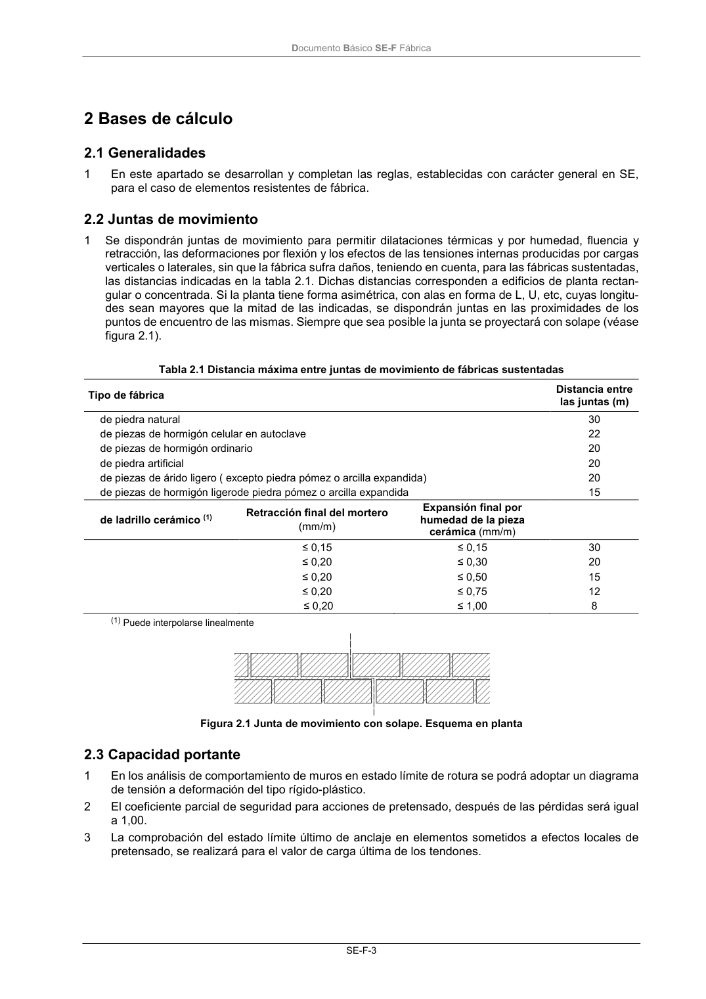

DB-SE-F · 2 Bases de cálculo · 2.1 Generalidades · 2.2 Juntas de movimiento · 2.3 Capacidad portante · versión 2019-12-20
SHA256: e3e0805c3b4c307519c26dc34c3fdbf143d842edd013c91b0f52d2c73403d91c · página física 7 de 70 · métodos de encabezado
solo si están cotejados.
Formatos: Markdown · JSON de bloques · PDF p. 7 · imagen PNG
Documento Básico SE-F Fábrica
SE-F-3
2 Bases de cálculo
2.1 Generalidades
1
En este apartado se desarrollan y completan las reglas, establecidas con carácter general en SE,
para el caso de elementos resistentes de fábrica.
2.2 Juntas de movimiento
1
Se dispondrán juntas de movimiento para permitir dilataciones térmicas y por humedad, fluencia y
retracción, las deformaciones por flexión y los efectos de las tensiones internas producidas por cargas
verticales o laterales, sin que la fábrica sufra daños, teniendo en cuenta, para las fábricas sustentadas,
las distancias indicadas en la tabla 2.1. Dichas distancias corresponden a edificios de planta rectan-
gular o concentrada. Si la planta tiene forma asimétrica, con alas en forma de L, U, etc, cuyas longitu-
des sean mayores que la mitad de las indicadas, se dispondrán juntas en las proximidades de los
puntos de encuentro de las mismas. Siempre que sea posible la junta se proyectará con solape (véase
figura 2.1).
Tabla 2.1 Distancia máxima entre juntas de movimiento de fábricas sustentadas
Tipo de fábrica
Distancia entre
las juntas (m)
de piedra natural
30
de piezas de hormigón celular en autoclave
22
de piezas de hormigón ordinario
20
de piedra artificial
20
de piezas de árido ligero ( excepto piedra pómez o arcilla expandida)
20
de piezas de hormigón ligerode piedra pómez o arcilla expandida
15
de ladrillo cerámico (1)
Retracción final del mortero
(mm/m)
Expansión final por
humedad de la pieza
cerámica (mm/m)
≤ 0,15
≤ 0,15
30
≤ 0,20
≤ 0,30
20
≤ 0,20
≤ 0,50
15
≤ 0,20
≤ 0,75
12
≤ 0,20
≤ 1,00
8
(1) Puede interpolarse linealmente
Figura 2.1 Junta de movimiento con solape. Esquema en planta
2.3 Capacidad portante
1
En los análisis de comportamiento de muros en estado límite de rotura se podrá adoptar un diagrama
de tensión a deformación del tipo rígido-plástico.
2
El coeficiente parcial de seguridad para acciones de pretensado, después de las pérdidas será igual
a 1,00.
3
La comprobación del estado límite último de anclaje en elementos sometidos a efectos locales de
pretensado, se realizará para el valor de carga última de los tendones.
